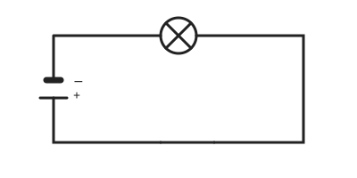
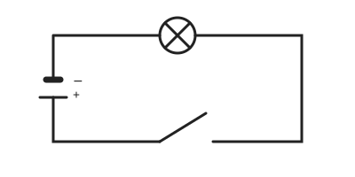

Der einfache Stromkreis
Mit einem KI-Tutor lernen
Ein KI-Tutor erklärt dir diese Seite und hilft dir bei den Übungen. Wähl deinen Assistenten:
Mit Claude öffnen Mit ChatGPT öffnen Mit Mistral Vibe öffnen
Du nutzt dein eigenes Konto beim Anbieter. Der Assistent ist kein Angebot von lernapps.net: lernapps liefert nur Inhalte und Übungen. Die Wahl gilt für alle Seiten, nur auf diesem Gerät.
Was ein Stromkreis braucht
Eine Lampe leuchtet nur, wenn Strom durch sie fließt. Dafür brauchst du drei Dinge: eine Spannungsquelle, zum Beispiel eine Batterie, einen Verbraucher, zum Beispiel eine Lampe, und Leitungen, die beides verbinden.
- Stromkreis
Ein Stromkreis ist ein Weg aus Leitungen von einem Pol der Spannungsquelle durch den Verbraucher zum anderen Pol.

Ein geschlossener Stromkreis. Die Lampe leuchtet.
Quelle: eigene Zeichnung. Lizenz: CC-BY-4.0.Der Kreis muss geschlossen sein
Der Strom fließt nur, wenn der Weg ohne Lücke von einem Pol durch den Verbraucher zum anderen Pol führt. Das nennt man einen geschlossenen Stromkreis. Fehlt irgendwo ein Stück Leitung, ist der Stromkreis offen, und es fließt kein Strom.

Ein offener Stromkreis. Die Lücke am Schalter unterbricht den Weg, die Lampe bleibt dunkel.
Quelle: eigene Zeichnung. Lizenz: CC-BY-4.0.Strom wird nicht verbraucht
Die Lampe wandelt elektrische Energie in Licht und Wärme um. Der Strom selbst fließt weiter durch den ganzen Kreis zurück zur Quelle. Hinter der Lampe fließt genauso viel Strom wie davor.
Übung
Übung
Lösung
Der Stromkreis ist an der Bruchstelle offen. richtige Antwort
Ohne durchgehenden Weg kann kein Strom fließen.
Die Batterie hat durch den Bruch keine Spannung mehr.
Die Batterie hat weiter Spannung. Es fließt aber kein Strom, weil der Weg unterbrochen ist.
Der Strom wird schon im Kabel verbraucht.
Strom wird nirgends verbraucht. Er fließt im Kreis, wenn dieser geschlossen ist.
Strom fließt nur in einem geschlossenen Stromkreis. Ein Bruch öffnet den Kreis.
Mehr dazu:
Übung
Lösung
Richtige Antwort: Die Aussage stimmt nicht.
Die Lampe verbraucht keinen Strom. Sie wandelt Energie um. Vor und hinter der Lampe fließt gleich viel Strom.
Mehr dazu:
Übung
Lösung
Richtige Antwort: Batterie – liefert die Spannung; Lampe – wandelt elektrische Energie in Licht um; Leitung – verbindet die Bauteile
Die Batterie ist die Spannungsquelle, die Lampe der Verbraucher, die Leitungen schließen den Kreis.
Mehr dazu:
Übung
Lösung
geschlossen richtige Antwort
Ein geschlossener Stromkreis hat keine Lücke.
offen
Offen heißt: Es gibt eine Lücke, es fließt kein Strom.
verbraucht
Ein Stromkreis wird nicht verbraucht. Das Wort beschreibt keinen Zustand des Kreises.
Nur ein geschlossener Stromkreis lässt Strom fließen.
Mehr dazu: